<ion-header class="ion-no-border">
  <ion-toolbar>
    <ion-button
      routerLink="/tabs/home"
      shape="round"
      slot="start"
      fill="clear"
      color="light"
    >
      <ion-icon name="chevron-back-outline" slot="icon-only"></ion-icon>
    </ion-button>
    <ion-title>Messages</ion-title>
    <ion-buttons slot="end">
      <ion-chip>
        <ion-avatar>
          
        </ion-avatar>
        <ion-label>30m</ion-label>
      </ion-chip>
    </ion-buttons>
  </ion-toolbar>
  <div class="search-bar">
    <ion-searchbar
      mode="md"
      search-icon="search-outline"
      placeholder="Search"
      [(ngModel)]="searchTerm"
      (ionInput)="filterList()"
      [debounce]="1000"
    ></ion-searchbar>
    <ion-button fill="clear" shape="round">
      <ion-avatar slot="icon-only">
        
      </ion-avatar>
    </ion-button>
  </div>
</ion-header>
<ion-content fullscreen="true">
  <div class="chatsContent">
    <div class="customSegment">
      <ion-segment
        mode="md"
        [(ngModel)]="selectedSegment"
        (ionChange)="segmentChanged($event)"
      >
        <ion-segment-button value="messages">
          <ion-label>Messages</ion-label>
        </ion-segment-button>
        <ion-segment-button value="calls">
          <ion-label>Calls</ion-label>
        </ion-segment-button>
      </ion-segment>
    </div>
    <div class="segment-content" [ngSwitch]="selectedSegment">
      <ion-list class="ion-padding" lines="full" *ngSwitchCase="'messages'">
        <ion-item
          *ngFor="let chat of filteredChats"
          (click)="openConversation(chat.id)"
        >
          <ion-avatar slot="start">
            
          </ion-avatar>
          <ion-label>
            <h2>{{ chat.name }}</h2>
            <p
              style="
                width: 214px;
                overflow: hidden;
                text-overflow: ellipsis;
                white-space: nowrap;
              "
            >
              {{ chat.messages[0].text }}
            </p>
          </ion-label>
          <div
            style="
              display: flex;
              flex-direction: column;
              align-items: self-end;
              gap: 5px;
            "
          >
            <ion-badge
              style="background-color: white"
              color="danger"
              *ngIf="chat.unread"
              slot="end"
              ><div
                style="
                  height: 12px;
                  width: 12px;
                  border-radius: 50px;
                  background: linear-gradient(180deg, #e0030c 0%, #9b0207 100%);
                "
              ></div
            ></ion-badge>
            <ion-note slot="end" color="medium"
              >{{ chat.messages[0].time}}</ion-note
            >
          </div>
        </ion-item>
      </ion-list>

      <ion-list class="ion-padding" lines="full" *ngSwitchCase="'calls'">
        <ion-item *ngFor="let call of filteredCalls">
          <ion-avatar slot="start">
            
          </ion-avatar>
          <ion-label>
            <h2>{{ call.name }}</h2>
            <ion-icon
              color="danger"
              style="transform: rotate(45deg)"
              [name]="call.direction === 'outgoing' ? 'arrow-up' : 'arrow-down'"
            ></ion-icon>
            <p style="display: inline-block">{{ call.time }}</p>
          </ion-label>
          <ion-icon
            [name]="call.type === 'video' ? 'videocam' : 'call'"
            slot="end"
          ></ion-icon> </ion-item
      ></ion-list>
    </div>
  </div>
</ion-content>
